Project Overview
The large overarching goal of this project is to make a generic framework for making limbed robots.
All limbed robots can be described from one link to another with 4 numbers (D-H Coordinates). I wanted to
make a more physical interpretation of this. Another big element of limbed robots is the torque/speed of each
joint. This is determined by the gear ratio and the motor. To make the project simple, I assumed there was only
one motor. Therefore, this project is:
I am trying to make a generic model of a robot link where both gearboxes and the physical link to link distance
is very modifiable and easy to change. I am using a single motor and have designed a set of gearboxes (3:1, 9:1, ..)
and am currently designing a system to make them easily swappable. In terms of the distance from link to link I have designed
a simple input/output mechanism that is easy to screw in, so from the output of one motor the next link can be at whatever
angle and placement.
Using this system, I have designed and built a full-sized robot dog. I have also designed (but not yet built) a series of other
classic limbed robots, inlcluding multiple 7DoF robot arms, a copy of the JPL RoboSimian, hexapods, and more robot dogs.

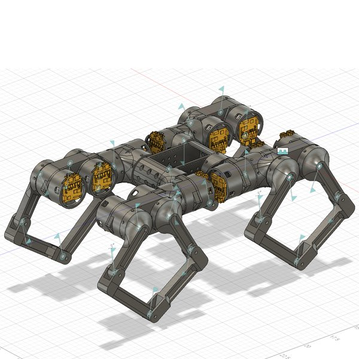
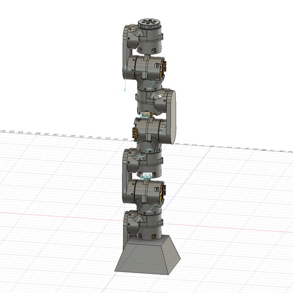
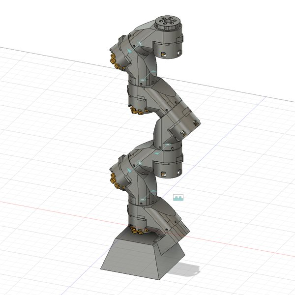
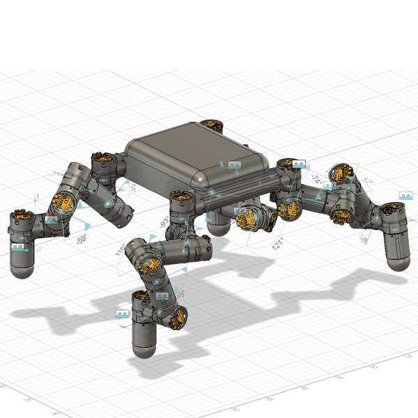
Initial Attempts
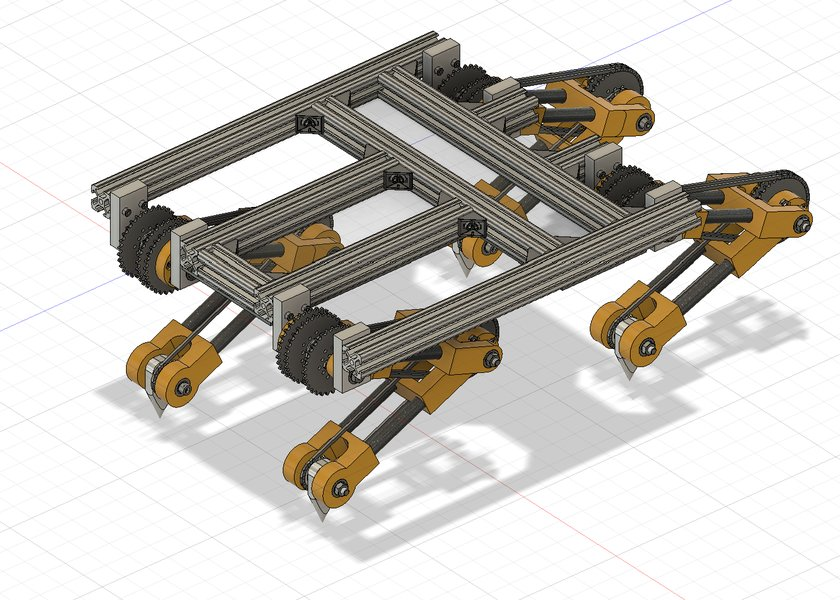
I've spend almost a year on this project so far (and there is still lots to go!). The project started out
as an attempt to build a walking and climbing robot (with little spikes I designed). I wanted to make a sort
of "crab robot", that walked sideways and could also climb trees/porous objects like a crab did. I got as far as
making a full CAD model of the crab (pictured to the right). However, the CAD had many issues, with the main ones I
could forsee was the spiked foot being backdrivable and general problems with chain tension. I decided I should CAD
another model before moving onto prototyping.
It was because of designing that version that I realized that a lot of the mechanical design behind robotics can be
generalized. I only wanted to add a simple hook mechanism at the bottom of an already existing robot dog
design. I then started to work on a generalized robot dog. At that point in time, I only was trying to make a system
that people can edit the length of and have a dog of varying lengths. It was then that I designed the next version of
the robot dog. I started to physically prototype too, 3D printing all of my versions and testing them. The major design
changes from this version was moving to a belt driven mechanism and also have a not-backdrivable worm gear for the
climbing mechanism.
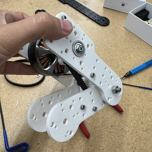
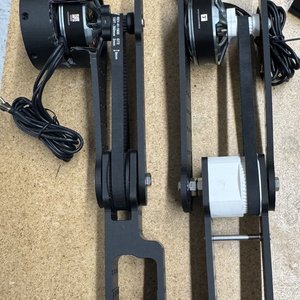
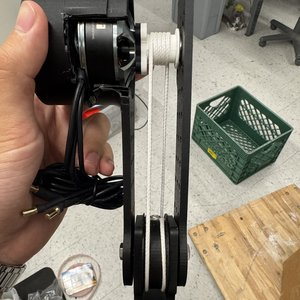
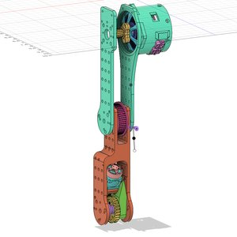
QDD Actuator
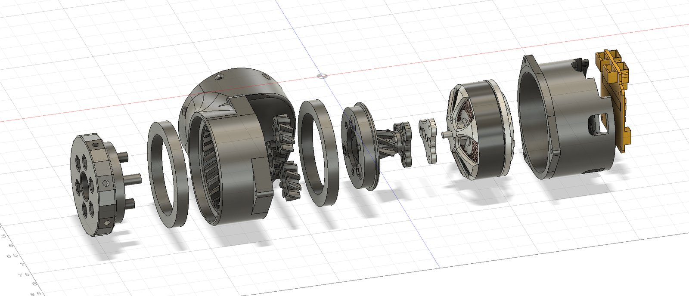
I realized I needed a QDD (quasi-direct drive) actuator because of the gear ratios that I needed.
Because I was using drone motors, I had a very low torque and a very high rpm (which is the opposite of
what I needeed for a robot dog). I could only get a max of 3:1 ratio with a belt drive, while I could easily
get a 5:1 or 9:1 ratio with a planetary gearbox. When I designed and tested the plantary gearbox, it worked
very well, and I switched to the final project that I am working on now (generic limb robot). After a couple iterations
of design I landed on a 5:1 gear ratio planetary gearbox with helical gears. There is relatively low friction and almost
no backlash. This actuator became the core of all futher designs. It produces around 4Nm of torque at ~740 rpm (still very
fast and relatively weak). The motor powering the current actuator is a tmotor MN5212, which produces around
.75nM of torque at a stable operating state. It runs on 6S voltage (22.4v)
The actuator is the main place of improvement of my design. Because I was limited by 3D printed gears
I was limited to what module I could print the gears, and therefore the ratio I could get. I am planning
on trying to reduce the module as much as I can go (I have done a 9:1 ratio already which has worked), and
also look into different types of gearboxes (cycloidal, harmonic, etc).
Full Robot Dog
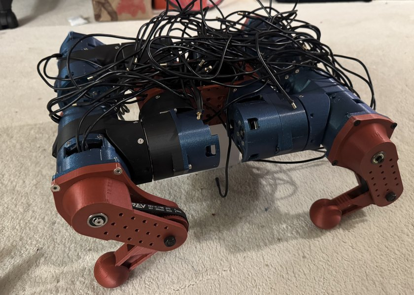
I have fully built and mechanically tested a simple version of the robot dog so far. It stands at about 6in off the ground and weights around 13 pounds. It runs of a 10000mAh 6S battery, where it can confortably walk and jump for around 20 minutes. It has 12DoF in the same directions as many of the standerd industry robot dogs that exist. Its hip and upper leg joints are powered by 2 5:1 ratio QDD actuators and the lower leg joint is powered by a belt at a 3:1 ratio. It took many iterations and 3D prints to get to the current state. It is mostly 3D printed, for reproducability and cost.
Electronics
The dog is powered by a teensy 4.1 microcontroller that runs a micro-ros node which communicates with the computer. Each individual motor is powered by a moteus r4.11 motor controller. These also serve as the encoders for the motor, and are all connected together with a FD-CAN protocol. These controllers are powered directly by a 10,000mAh 6S battery which feeds into two PDBs which split the current into all of the 12 controllers.
Software
I am currently still working on the software, but it will be run with a ROS2 environment. Each motor controller will be a node which will then feed into a node for each leg (hip + upper_joint + lower_joint). Each leg node will calculate the position of the tip of the leg using the jacobian and will account for any errors with basic PID control. Some basic trotting/crawling/walking behaviors will then be designed.
Interactive CAD
Click the window below to open the CAD model. Drag to rotate it, right-drag to move it, and scroll to zoom.
Other Limbed Robots
Using the generic QDD actuator, I designed many more limbed robots to demonstrate the projects potiental. While many of the gearboxes need to be designed, I was able to design almost any type of limbed robot, from various models of robot arms to more obsure old robots (JPL's robosimian). Each of the different CADs shown need various gear ratios, from the 5-Bar robot dog only needed the current 5:1 to the robot arms which need upwards of 50:1 ratios in them.
Future Work
There is a lot of work to do in the future. The first thing I need to do is design more gearboxes along the same form factor. Then I hope to make the gearbox systems easily swappable. I also hope to improve the link between joints to be more diverse or more easily snapped on (versus screwed on). I will try to occasionally update this page according to my current progress, but my hope is that someday this can be an open source project! I hope this can help people build more types of robots easier, and not make them have to rediscover the same stuff. I hope these robots and this framework can act as a jumping off point for other people to build more creative and more diverse robots :)